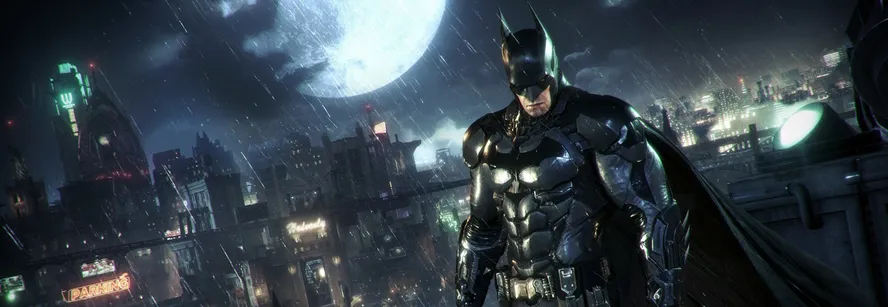

Explore a cidade dominada pelo caos e enfrente os vilões mais perigosos
Batman: Arkham City é um jogo de ação e aventura desenvolvido pela Rocksteady Studios e publicado pela Warner Bros. Games. Lançado em 2011, o jogo mergulha os jogadores em uma Gotham sombria e cheia de perigos.
Para mais informações, visite o site oficial da Warner Bros. Games.